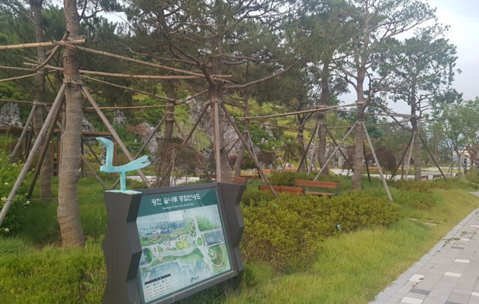

광진숲나루
광진구에 새로 단장한 작은공원 체육공원과 구의야구공원을 지상으로 잇는 터널을 만들어서 지상에 멋진 시민의 휴식공간인 광진숲나루를 조성하였다

뚝섬한강공원
한강공원이 조성되기 이전부터 강변유원지로 유명했던 곳입니다. 수상에서는 시원한 바람을 맞으며 낭만과 젊음을 만끽할 수 있는 윈드서핑, 수상스키, 모터보트 등 수상스포츠가 활발하게 이루어지고 있습니다

커먼그라운드
건대 놀거리, 먹거리, 쇼핑까지 가능한 복합문화공간

서울어린이대공원
놀이동산 및 동물원, 식물원이 가득한 어린이가족테마공원
광진구 맛집

비스타 워커힐 서울 피자힐
서울 광진구 워커힐로 177 워커힐 호텔앤리조트
워커힐 피자힐에 가서 맛있는 피자

아날로그키친
서울 광진구 아차산로 200 커먼그라운드 Market Hall 3층
특제간장소스로 구운 통오징어구이밥

마초쉐프 건대점
서울 광진구 능동로 125 2층 마초쉐프 건대점
1.5인분의 푸짐한 양과 맛있고 분위기 좋은 식당

송화산시도삭면
서울 광진구 뚝섬로27길 48
중국의맛 그대로 만든, 산시도삭면과 딤섬

안다즈커피
서울 광진구 천호대로132길 10
따스한 분위기를 가진 특색있는 음료를 가진 카페

바르미샤브샤브N칼국수 구의점
서울 광진구 아차산로 471 CS PLAZA
무한리필 샐러드바랑 신선한 재료를 쓰는 샤브샤브집